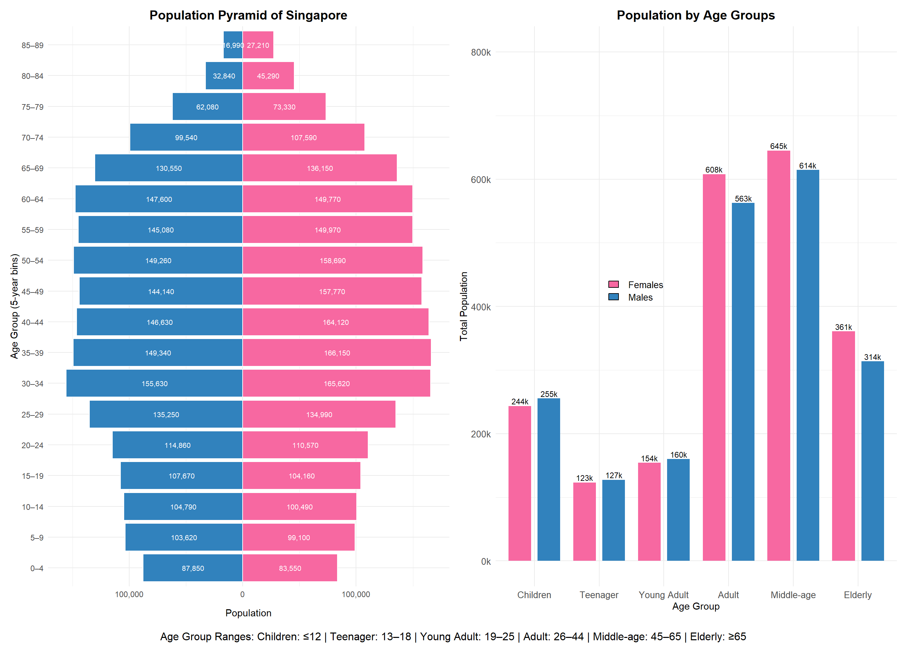

pacman::p_load(scales, ggrepel, patchwork,
ggthemes, hrbrthemes,tidyverse,
tidytext,treemapify) Take Home Exercise 1
Demographic structures and distribution of Singapore in 2024
1 Overview
This exercise delivers three static analytical visualisations and concise commentaries that explain the demographic structure and geographic distribution of Singapore residents in June 2024. Using the “Singapore Residents by Planning Area / Subzone, Single Year of Age and Sex” dataset from the Department of Statistics, the data were wrangled entirely with the tidyverse and visualised with ggplot2 and its extensions, adhering to the exercise requirement for reproducible R code and non‑interactive graphics.
Nation‑wide age profile – a population pyramid and companion bar chart depict gender balance, cohort sizes, and the dominance of the 26‑65 workforce alongside a contracting youth base and expanding senior segment.
Spatial distribution – a treemap ranks planning areas by total residents, while six faceted bar charts rank them within each major age group, revealing contrasts such as Tampines’ family orientation versus Bedok’s larger elderly share.
Age‑structure contrasts – a bubble plot (average age vs population, bubble = senior share) and violin plots of the ten largest areas detail how mean age and intra‑area distributions vary, pinpointing estates like Ang Mo Kio (oldest) and Punggol (youngest).
Together these visuals provide a foundation for evidence‑based recommendations on schooling capacity, eldercare facilities, housing typology, and transport planning across Singapore’s diverse neighbourhoods.
2 Data Pre-processing and Exploration
2.1 Installing and loading the required libraries
| name | purpose |
|---|---|
| scales | Nicely formats axis ticks and legends. |
| ggrepel | Adds non‑overlapping text labels to ggplots. |
| patchwork | Combines multiple ggplots into a single figure. |
| ggthemes | Supplies predefined aesthetic themes. |
| hrbrthemes | Extends ggthemes with modern, typographically friendly themes and font support. |
| tidyverse | Meta‑package that loads ggplot2, dplyr, tidyr, readr, stringr, forcats, etc. — the backbone for data import, transformation, and visualisation. |
| tidytext | Tokenises and analyses text. |
| treemapify | Creates ggplot‑compatible treemaps. |
2.2 Importing dataset
population_data <- read_csv("respopagesex2024.csv") %>%
mutate(Age = as.numeric(Age))
glimpse(population_data)Rows: 60,424
Columns: 6
$ PA <chr> "Ang Mo Kio", "Ang Mo Kio", "Ang Mo Kio", "Ang Mo Kio", "Ang Mo K…
$ SZ <chr> "Ang Mo Kio Town Centre", "Ang Mo Kio Town Centre", "Ang Mo Kio T…
$ Age <dbl> 0, 0, 1, 1, 2, 2, 3, 3, 4, 4, 5, 5, 6, 6, 7, 7, 8, 8, 9, 9, 10, 1…
$ Sex <chr> "Males", "Females", "Males", "Females", "Males", "Females", "Male…
$ Pop <dbl> 10, 10, 10, 10, 10, 10, 10, 10, 30, 10, 20, 10, 20, 30, 30, 10, 3…
$ Time <dbl> 2024, 2024, 2024, 2024, 2024, 2024, 2024, 2024, 2024, 2024, 2024,…The code imports the dataset respopagesex2024.csv and load the CSV file into a dataframe named population_data.
After import, the mutate() function is applied to convert the Age column from character to numeric format.
Lastly, the glimpse() function provides a concise overview of the dataset’s structure, displaying column names, data types, and sample values.
2.3 Dataset for visuallisation 1
pyramid_data <- population_data %>%
mutate(
Age = as.numeric(Age),
AgeGroup = cut(
Age,
breaks = c(seq(0, 100, by = 5), Inf),
right = FALSE,
labels = c(paste(seq(0, 95, 5), seq(4, 99, 5), sep = "–"), "100+")
)
) %>%
filter(!is.na(AgeGroup)) %>%
group_by(AgeGroup, Sex) %>%
summarise(Pop = sum(Pop), .groups = "drop") %>%
mutate(Pop = ifelse(Sex == "Males", -Pop, Pop))The code prepares the dataset population_data for visualising a population pyramid by first converting the Age column to numeric format. It then categorises individual ages into 5-year intervals using the cut() function, creating a new variable AgeGroup with labels such as “0–4”, “5–9”, …, and “100+”. Any rows with missing AgeGroup values are filtered out. The data is then grouped by both AgeGroup and Sex, and the total population (Pop) within each group is calculated using summarise(). Finally, to enable the mirrored bar chart structure of a population pyramid, male population values are converted to negative using mutate() with an ifelse() condition. This transformation allows males to be displayed on the left and females on the right of the central axis in the plot.
pyramid_data_grouped <- population_data %>%
mutate(
AgeGroup = case_when(
Age <= 12 ~ "Children",
Age >= 13 & Age <= 18 ~ "Teenager",
Age > 18 & Age <= 25 ~ "Young Adult",
Age >= 26 & Age <= 44 ~ "Adult",
Age >= 45 & Age <= 65 ~ "Middle-age",
Age > 65 ~ "Elderly"
)
) %>%
filter(!is.na(AgeGroup)) %>%
group_by(AgeGroup, Sex) %>%
summarise(Total_Pop = sum(Pop), .groups = "drop") %>%
mutate(
AgeGroup = factor(AgeGroup, levels = c("Children", "Teenager", "Young Adult",
"Adult", "Middle-age", "Elderly")),
Total_Pop_k = paste0(round(Total_Pop / 1000), "k")
)The code involves transforming population data into a summarized form suitable for visualizing population distribution by broad age categories and sex. First, the Age variable is classified into six age groups—Children, Teenager, Young Adult, Adult, Middle-age, and Elderly—using logical conditions via the case_when() function. Any records with missing or undefined age groups are removed using filter(). The data is then grouped by both AgeGroup and Sex, and the total population for each group is calculated using summarise(). To ensure a consistent order in plots, the AgeGroup variable is converted to a factor with a specified level sequence. Finally, a new column Total_Pop_k is created to represent the total population in thousands, formatted with a “k” suffix for more concise labeling in visualizations.
2.4 Dataset for visuallisation 2
planning_area_population <- population_data %>%
group_by(PA) %>%
summarise(Total_Pop = sum(Pop), .groups = "drop") %>%
filter(Total_Pop > 0) %>%
mutate(Pop_thousands = Total_Pop / 1000)The code groups the population_data by PA (Planning Area) and then uses summarise() to calculate the total population (Total_Pop) within each area by summing the Pop values. The .groups = "drop" argument ensures the resulting data frame is ungrouped for further processing. Next, it filters out any planning areas with a total population of zero to maintain clarity in the visualization. Finally, the code introduces a new variable, Pop_thousands, by dividing the total population by 1,000 to express values in thousands.
population_age_group_top20 <- population_data %>%
mutate(
Age = as.numeric(Age),
AgeGroup = case_when(
Age <= 12 ~ "Children",
Age >= 13 & Age <= 18 ~ "Teenager",
Age > 18 & Age <= 25 ~ "Young Adult",
Age >= 26 & Age <= 44 ~ "Adult",
Age >= 45 & Age <= 65 ~ "Middle-age",
Age > 65 ~ "Elderly"
)
) %>%
filter(!is.na(AgeGroup)) %>%
group_by(PA, AgeGroup) %>%
summarise(Total_Pop = sum(Pop), .groups = "drop") %>%
filter(Total_Pop > 0) %>%
group_by(AgeGroup) %>%
slice_max(order_by = Total_Pop, n = 20) %>%
ungroup()The code prepares a dataset to visualize the top 20 planning areas in Singapore by population across different age groups. It begins by converting the Age variable to a numeric format and classifying individuals into custom age groups such as “Children,” “Teenager,” “Young Adult,” “Adult,” “Middle-age,” and “Elderly” using the case_when() function. Rows with undefined age groups are removed using filter(). The data is then grouped by PA (Planning Area) and AgeGroup, and the total population for each group is calculated using summarise(). After filtering out planning areas with zero population, the code selects the top 20 planning areas per age group based on total population using slice_max(). Finally, ungroup() is applied to prepare the data for plotting.
2.5 Dataset for visuallisation 3
violin_data <- population_data %>%
mutate(Age = as.numeric(Age)) %>%
filter(!is.na(Age), !is.na(PA)) %>%
group_by(PA, Age) %>%
summarise(Pop = sum(Pop), .groups = "drop") %>%
uncount(weights = Pop)
top10_PAs <- population_data %>%
group_by(PA) %>%
summarise(Total_Pop = sum(Pop), .groups = "drop") %>%
arrange(desc(Total_Pop)) %>%
slice_head(n = 10) %>%
pull(PA)
violin_filtered <- violin_data %>%
filter(PA %in% top10_PAs) %>%
mutate(PA = factor(PA, levels = top10_PAs))The code first converts the Age column to numeric and drops any rows where either age or planning‐area (PA) is missing. It then groups by each unique combination of PA and Age and sums the population counts (Pop) to get an aggregated tally for each age cohort within each area. The uncount() step “explodes” these tallies back into individual rows—so each row now represents one person’s age and planning area—producing a long‐form dataset ideal for violin‐plotting. Separately, it identifies the ten most populous planning areas by summing Pop in the original data, sorting descending, and pulling out the top ten area names into top10_PAs. Finally, it filters the expanded violin_data to only those ten areas and redefines PA as a factor ordered according to population rank.
top20_PAs <- population_data %>%
group_by(PA) %>%
summarise(Total_Pop = sum(Pop), .groups = "drop") %>%
arrange(desc(Total_Pop)) %>%
slice_head(n = 20) %>%
pull(PA)
pa_summary20 <- violin_data %>%
filter(PA %in% top20_PAs) %>%
mutate(AgeGroup = if_else(Age > 65, "Elderly", "Other")) %>%
group_by(PA) %>%
summarise(
Avg_Age = mean(Age),
Total_Pop = n(),
Elderly_Prop = mean(AgeGroup == "Elderly"),
.groups = "drop"
)The code identifies the twenty planning areas with the largest populations by grouping the original population_data by PA, summing the Pop counts to compute each area’s total population, sorting those totals in descending order, and then taking the first twenty PA values into a vector called top20_PAs. Next, it builds pa_summary20 by filtering the expanded violin_data to only those twenty areas and creating a new categorical variable AgeGroup which labels individuals older than 65 as “Elderly” and everyone else as “Other.” Finally, it groups this subset by PA and computes three key summary statistics for each area: the mean age (Avg_Age), the total number of observations (Total_Pop, effectively the population count in the sample), and the proportion of residents classified as elderly (Elderly_Prop).
3 Data visuallisation
3.1 Visuallisation 1 - Demographic Structure of Singapore Residents by Age and Sex

# Population Pyramid
p1 <- ggplot(pyramid_data, aes(x = AgeGroup, y = Pop, fill = Sex)) +
geom_col(width = 0.9, color = "white") +
geom_text(aes(label = comma(abs(Pop))),
position = position_stack(vjust = 0.5),
size = 2.8,
color = "white") +
coord_flip() +
scale_y_continuous(labels = function(x) comma(abs(x))) +
scale_fill_manual(values = c("Males" = "#3182bd", "Females" = "#f768a1")) +
labs(
title = "Population Pyramid of Singapore",
x = "Age Group (5-year bins)",
y = "Population"
) +
theme_minimal() +
theme(
plot.title = element_text(face = "bold", size = 14, hjust = 0.5), # center title
axis.text = element_text(size = 9),
axis.title.x = element_text(margin = margin(t = 10)),
legend.position = "none"
)
# Age group bar chart
p2 <- ggplot(pyramid_data_grouped, aes(x = AgeGroup, y = Total_Pop, fill = Sex)) +
geom_col(position = position_dodge(width = 0.9), width = 0.7) +
geom_text(aes(label = Total_Pop_k),
position = position_dodge(width = 0.9),
vjust = -0.3,
size = 3) +
scale_y_continuous(labels = label_number(scale = 1e-3, suffix = "k")) +
scale_fill_manual(values = c("Males" = "#3182bd", "Females" = "#f768a1")) +
labs(
title = "Population by Age Groups",
x = "Age Group",
y = "Total Population"
) +
theme_minimal() +
theme(
axis.text = element_text(size = 10),
plot.title = element_text(size = 14, face = "bold", hjust = 0.5), # center title
legend.position = "none"
) +
annotate("rect", xmin = 2, xmax = 3, ymin = 400000, ymax = 500000, alpha = 0) + # dummy to open up space
annotate("rect", xmin = 0.5, xmax = 6.5, ymin = 700000, ymax = 800000, fill = NA) +
annotate("rect", xmin = 2, xmax = 3, ymin = 400000, ymax = 500000, fill = NA) +
annotate("rect", xmin = 2.15, xmax = 2.3, ymin = 430000, ymax = 440000, fill = "#f768a1", color = "black") +
annotate("text", x = 2.45, y = 435000, label = "Females", hjust = 0, size = 3.5) +
annotate("rect", xmin = 2.15, xmax = 2.3, ymin = 410000, ymax = 420000, fill = "#3182bd", color = "black") +
annotate("text", x = 2.45, y = 415000, label = "Males", hjust = 0, size = 3.5)
# Combine and caption
(p1 | p2) +
plot_annotation(
caption = "Age Group Ranges: Children: ≤12 | Teenager: 13–18 | Young Adult: 19–25 | Adult: 26–44 | Middle-age: 45–65 | Elderly: ≥65",
theme = theme(plot.caption = element_text(hjust = 0.5, size = 12, margin = margin(t = 10)))
)Insight:
The population pyramid shows a mature demographic profile, with the largest cohorts in the 35–59 age range, reflecting Singapore’s aging trend. The base of the pyramid, representing children aged 0–14, is narrower, indicating lower birth rates in recent years. The gender distribution is generally balanced across age groups, with no major sex disparity observed.
The bar chart reinforces these patterns by grouping the population into broader age categories. The “Middle-age” (45–65) and “Adult” (26–44) segments together form the bulk of the population, representing the current and near-future workforce. Meanwhile, the “Children” and “Teenager” groups are comparatively smaller, signaling future challenges in population replacement. The significant size of the “Elderly” group (65+) emphasizes the rising demand for healthcare, eldercare, and retirement resources.
These visuals together highlight the pressing need for strategic planning in workforce sustainability, social infrastructure, and support systems to address Singapore’s shifting age structure.
3.2 Visuallisation 2 - Overview of Population Distribution by Planning Area and Age Group
# Treemap plot
p1 <- ggplot(planning_area_population, aes(area = Pop_thousands, label = PA, fill = Pop_thousands)) +
geom_treemap() +
geom_treemap_text(
colour = "black",
place = "centre",
reflow = TRUE,
size = 12
) +
scale_fill_viridis_c(option = "D", labels = scales::comma_format(suffix = "k")) +
labs(
title = "Treemap of Total Population by Planning Area (in Thousands)",
fill = "Population (thousands)"
) +
theme_minimal() +
theme(
plot.title = element_text(face = "bold", size = 18),
legend.position = "bottom"
)
# Bar plot
p2 <- ggplot(population_age_group_top20, aes(x = reorder_within(PA, Total_Pop, AgeGroup), y = Total_Pop, fill = AgeGroup)) +
geom_col(show.legend = FALSE) +
facet_wrap(~ AgeGroup, scales = "free") +
scale_x_reordered() +
coord_flip() +
labs(
title = "Top 20 Planning Areas by Age Group Population",
x = "Planning Area",
y = "Total Population"
) +
theme_minimal() +
theme(
strip.text = element_text(face = "bold", size = 16),
axis.text.y = element_text(size = 10),
plot.title = element_text(face = "bold", size = 18)
)
# combine both plots
p1 / p2 + plot_layout(heights = c(1, 2))Insight:
The treemap provides a high-level view of the total population across planning areas, showing that Tampines, Bedok, Sengkang, and Jurong West are the most densely populated regions in Singapore. These areas dominate in population size, occupying larger blocks and warmer color tones.
The bar charts below offer a breakdown by age group, revealing nuanced patterns: Tampines and Sengkang consistently rank high across most age groups, especially for adults and children, suggesting a family-oriented residential profile. In contrast, areas like Bedok have a significantly larger elderly population, while Woodlands stands out in the young adult category.
The variation across age groups highlights the differing demographic compositions of planning areas, which can inform planning for schools, eldercare, housing, and transportation needs.
3.3 Visuallisation 3 - Demographic Structure and Aging Patterns in Singapore’s Top Residential Planning Areas
# palette for all 20 PAs
area_colors_all <- colorRampPalette(
RColorBrewer::brewer.pal(10, "Set3")
)(20)
names(area_colors_all) <- top20_PAs
# Violin plot
p1 <- ggplot(violin_filtered, aes(x = PA, y = Age, fill = PA)) +
geom_violin(trim = FALSE, scale = "area", width = 0.8, alpha = 0.7) +
geom_boxplot(width = 0.1, outlier.shape = NA, color = "black") +
scale_fill_manual(values = area_colors_all[top10_PAs]) +
labs(
title = "Age Distribution by Planning Area (Top 10 Residential Areas)",
x = "Planning Area",
y = "Age"
) +
theme_minimal(base_size = 14) +
theme(
legend.position = "none",
axis.text.x = element_text(angle = 45, hjust = 1),
axis.title = element_text(size = 16),
plot.title = element_text(face = "bold", size = 18)
)
# Scatter plot
p2 <- ggplot(pa_summary20, aes(
x = Total_Pop,
y = Avg_Age,
size = Elderly_Prop,
fill = PA
)) +
geom_point(shape = 21, alpha = 0.8, color = "black") +
geom_text_repel(aes(label = PA), size = 4, max.overlaps = 30) +
scale_fill_manual(values = area_colors_all, guide = FALSE) +
scale_size_continuous(
name = "Elderly Proportion",
range = c(6, 20)
) +
scale_x_continuous(labels = scales::comma) +
labs(
title = "Average Age vs. Total Population (Top 20 Planning Areas)",
x = "Total Population",
y = "Average Age"
) +
theme_minimal(base_size = 14) +
theme(
legend.position = "right",
legend.title = element_text(size = 14),
legend.text = element_text(size = 12),
axis.title = element_text(size = 16),
plot.title = element_text(face = "bold", size = 18)
)
# combine
(p2 / p1) + plot_layout(heights = c(1, 0.6))Insight:
On the scatterplot, total population per PA ranges from approximately 90,000 in Sembawang to about 275,000 in Bedok and Tampines. Average ages vary between 36 years in Punggol and 46 years in Ang Mo Kio, with intermediate mean ages (≈38–45) in other PAs. Bubble sizes indicate elderly proportion: Ang Mo Kio (~20 %) and Bukit Merah (~18 %) have the largest shares, while Sembawang and Punggol register the smallest (~12 %).
In the violin plots for the top ten PAs, median ages are clustered between roughly 35 and 45 years; the interquartile ranges span about 20–30 years. Bedok and Hougang violins have wide upper distributions—indicating substantial populations over 60—while Punggol’s shape is narrowly concentrated between 20 and 40. Medians appear highest in Bukit Batok and Sengkang and lowest in Punggol and Choa Chu Kang.
4 Conclusion
Singapore’s demographic map is far from uniform and calls for neighbourhood‑specific policies.
Bedok and Ang Mo Kio top the charts for average age and elderly share (≈45 years, ≥18% seniors). These estates should be prioritised for geriatric clinics, barrier‑free retrofits, and daytime activity centres, while re‑skilling programmes can keep older residents economically active.
Conversely, Tampines and Sengkang combine large absolute populations with the highest counts of children and adults. Here, capacity expansion in preschools, primary schools and family‑oriented recreation will relieve crowding, and peak‑hour transit frequency should rise to meet the commuter load.
Jurong West and Woodlands host sizeable young‑adult cohorts; affordable starter housing, co‑working hubs, and evening bus services would match their mobility and employment needs.
Finally, Punggol and Sembawang, although populous, remain the youngest (mean age ≤ 38 years, < 13% seniors); forward planning should secure space for future eldercare even as current investment focuses on childcare and playground networks.
In short, aligning healthcare, education, transport and housing investments with each estate’s demographic profile will maximise social return and future‑proof Singapore’s urban fabric.
5 Reference
Kam, Tin Seong. (January 27, 2025). Beyond ggplot2 Fundamentals. R for Visual Analytics. https://r4va.netlify.app/chap02